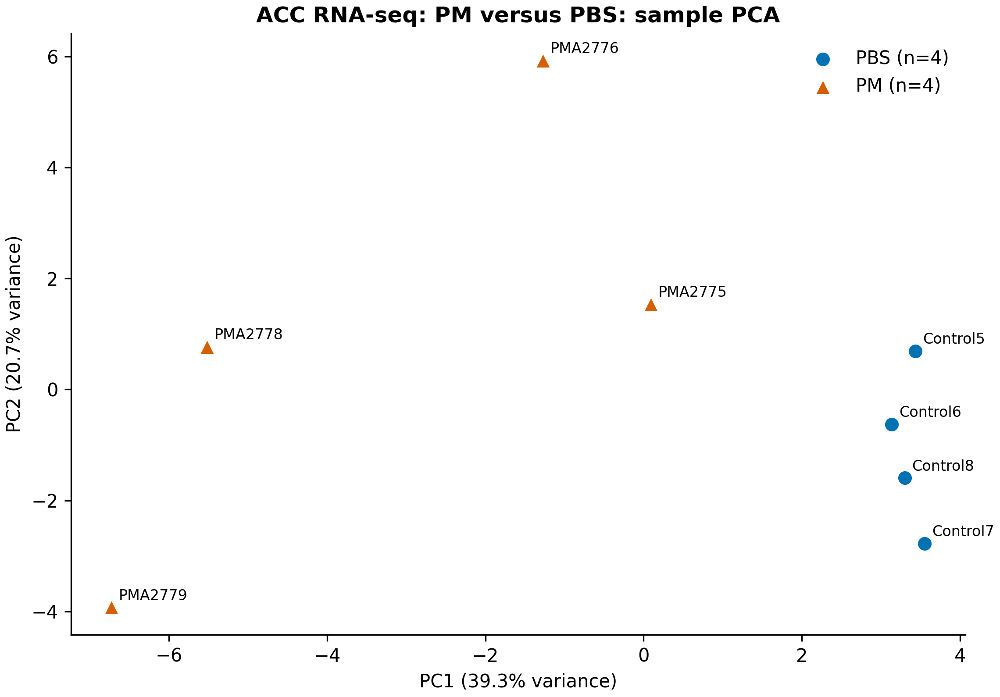
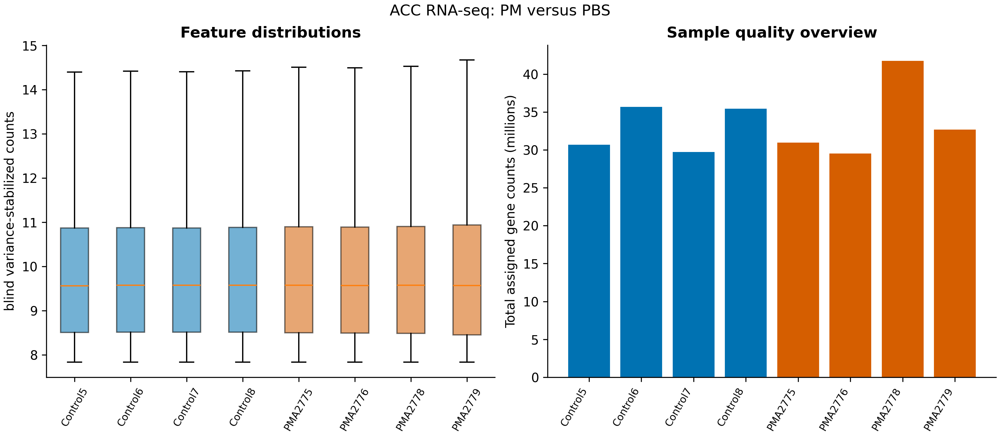
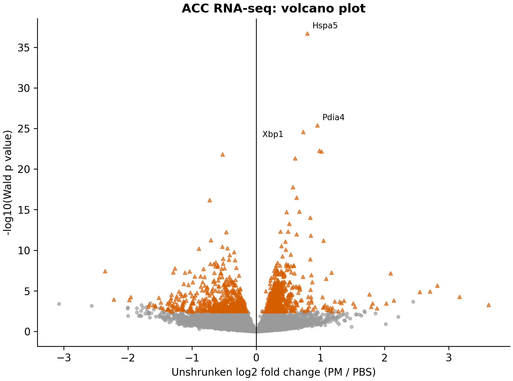
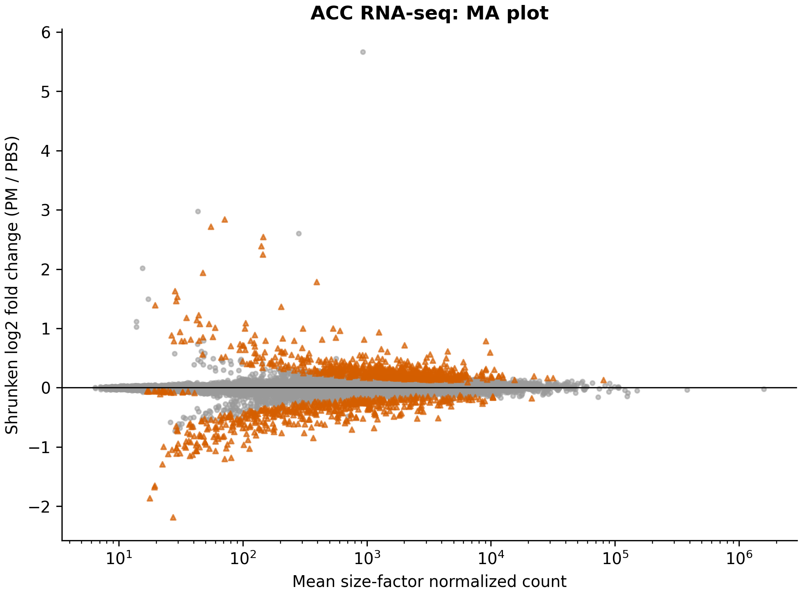
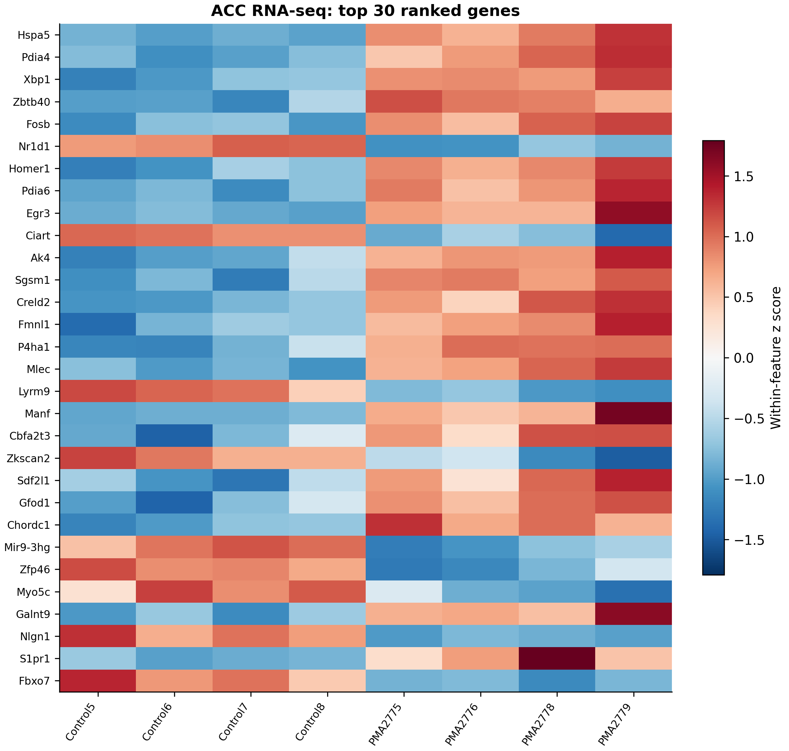

| Muestra | Muestra GEO | Título de la muestra original | Grupo | Inyección de PFF |
|---|---|---|---|---|
| Control5 | GSM8990943 | Control_PBS_rep1 | PBS | No |
| Control6 | GSM8990944 | Control_PBS_rep2 | PBS | No |
| Control7 | GSM8990945 | Control_PBS_rep3 | PBS | No |
| Control8 | GSM8990946 | Control_PBS_rep4 | PBS | No |
| PMA2775 | GSM8990951 | PM nasal_rep1 | PM | No |
| PMA2776 | GSM8990952 | PM nasal_rep2 | PM | No |
| PMA2778 | GSM8990953 | PM nasal_rep3 | PM | No |
| PMA2779 | GSM8990954 | PM nasal_rep4 | PM | No |
Corteza cingulada anterior: PM frente a PBS
Pregunta del estudio
Este análisis secundario compara la expresión de la corteza cingulada anterior entre los grupos de exposición nasal a PM y control con PBS de GSE297423. Solo se incluyen muestras sin inyección de fibrillas preformadas de alfa-sinucleína. Los animales pertenecen al modelo humanizado de alfa-sinucleína del estudio original; los resultados deben interpretarse en ese contexto experimental. Los demás grupos del estudio depositado se conservan entre los archivos originales, pero quedan fuera de este contraste. (Zhang et al. 2025)
Materiales y métodos
Datos de entrada y selección de muestras
El análisis parte de la tabla de conteos por gen proporcionada por los autores, sin repetir el alineamiento de los archivos FASTQ. Los identificadores Ensembl son las claves del análisis; los símbolos génicos, biotipos y cromosomas de esa tabla se conservan como anotaciones. Los conteos deben ser enteros, finitos y no negativos. Los identificadores génicos duplicados provocan un error explícito en lugar de una agregación implícita.
Las ocho bibliotecas seleccionadas son Control5, Control6, Control7, Control8, PMA2775, PMA2776, PMA2778 y PMA2779. La correspondencia entre las muestras GEO y los nombres de biblioteca determina la asignación de grupos. Se conservan todas las muestras biológicas seleccionadas. No se añade al modelo ninguna variable de lote, sexo o emparejamiento que no esté verificada.
Expresión diferencial y tamaños de efecto
Los genes deben tener al menos 10 conteos en al menos cuatro de las ocho muestras seleccionadas. PyDESeq2 ajusta un modelo lineal generalizado binomial negativo con diseño ~condition, factores de tamaño basados en la mediana de cocientes y un contraste de Wald bilateral de PM respecto de PBS. Los valores p ajustados mediante Benjamini–Hochberg buscan controlar la FDR en 0.05 dentro de este contraste, con filtrado independiente y filtrado de Cook habilitados. (Love et al. 2014; Muzellec et al. 2023; Benjamini y Hochberg 1995)
Los coeficientes de máxima verosimilitud sin regularizar, errores estándar, estadísticos de Wald, valores p y valores p ajustados se guardan antes de la regularización de los tamaños de efecto. Las columnas adicionales del coeficiente regularizado y su incertidumbre utilizan la regularización de colas pesadas de tipo apeGLM implementada por PyDESeq2. La regularización estabiliza la presentación de los tamaños de efecto; no reemplaza los resultados conservados de las pruebas de Wald. (Zhu et al. 2019)
Con cuatro réplicas biológicas por grupo, no se cumple el requisito predeterminado de al menos siete réplicas para reemplazar conteos mediante el diagnóstico de Cook. Por tanto, el filtrado de Cook por gen puede dejar valores p no disponibles aunque no se elimine ninguna muestra biológica. Los valores p ajustados ausentes por filtrado independiente se distinguen de estas pruebas nominales no disponibles.
Evaluación de calidad y visualizaciones
Los resúmenes por muestra incluyen los conteos génicos asignados totales, los genes detectados, los factores de tamaño y las fracciones de conteos de ARN mitocondrial y ribosomal. Estas fracciones resumen la matriz de conteos suministrada y no sustituyen una evaluación de calidad de las lecturas. El PCA utiliza una transformación estabilizadora de la varianza ciega al diseño y los 500 genes retenidos más variables, centrados sin escalar su varianza. Las filas del mapa de calor se estandarizan únicamente para visualizar. Ni el PCA ni el mapa de calor de genes mejor clasificados constituyen un conjunto de validación independiente.
Resultados
Calidad y estructura de las muestras
La tabla suministrada contiene 56,748 genes. Después del filtro de conteos preespecificado, permanecen 19,235 genes. Las bibliotecas seleccionadas contienen 29.5–41.7 millones de conteos génicos asignados. PC1 y PC2 explican, respectivamente, 39.3% y 20.7% de la varianza de los datos de entrada del PCA. En estos ejes, las muestras PM están más dispersas que las muestras PBS. Se informa esta heterogeneidad sin utilizarla para eliminar muestras.
| Muestra | Grupo | Tamaño de biblioteca | Genes con conteo > 0 | Factor de tamaño | Fracción de conteos mitocondriales | Fracción de conteos de ARNr |
|---|---|---|---|---|---|---|
| Control5 | PBS | 30686492 | 27841 | 0.913 | 0.0366 | 0.0623 |
| Control6 | PBS | 35666216 | 29149 | 1.11 | 0.0328 | 0.0448 |
| Control7 | PBS | 29710235 | 28408 | 0.906 | 0.0334 | 0.0598 |
| Control8 | PBS | 35433188 | 29106 | 1.08 | 0.0322 | 0.0525 |
| PMA2775 | PM | 30968815 | 28563 | 0.959 | 0.0325 | 0.0505 |
| PMA2776 | PM | 29498988 | 28022 | 0.896 | 0.0336 | 0.0507 |
| PMA2778 | PM | 41748872 | 27281 | 1.23 | 0.0319 | 0.061 |
| PMA2779 | PM | 32670677 | 26543 | 0.976 | 0.0289 | 0.0439 |




Expresión diferencial
Hay 1,167 genes con FDR < 0.05: 658 con mayor expresión y 509 con menor expresión en PM. De ellos, 45 presentan además un cambio log2 regularizado de valor absoluto al menos 1. Esta selección adicional por tamaño de efecto es descriptiva y no constituye una prueba separada de un efecto mínimo.
Hay valores p nominales de Wald disponibles para 19,225 genes y valores p ajustados para 17,360 genes. Los 1,875 valores p ajustados no disponibles incluyen 10 pruebas nominales filtradas por Cook y 1,865 genes con una prueba nominal que el filtrado independiente no retuvo para el ajuste por pruebas múltiples. No se debe denominar genes atípicos a todas estas categorías.
| ID del gen | Gen | Conteo normalizado medio | log₂FC de máxima verosimilitud | Error estándar de MLE | log₂FC regularizado | p nominal | FDR de BH |
|---|---|---|---|---|---|---|---|
| ENSMUSG00000026864 | Hspa5 | 9.07e+03 | 0.798 | 0.062 | 0.788 | 1.83e-37 | 3.17e-33 |
| ENSMUSG00000025823 | Pdia4 | 1.25e+03 | 0.952 | 0.09 | 0.935 | 4.05e-26 | 3.51e-22 |
| ENSMUSG00000020484 | Xbp1 | 2.01e+03 | 0.73 | 0.07 | 0.717 | 2.53e-25 | 1.46e-21 |
| ENSMUSG00000060862 | Zbtb40 | 605 | 0.983 | 0.1 | 0.963 | 5.39e-23 | 2.27e-19 |
| ENSMUSG00000003545 | Fosb | 533 | 1.02 | 0.103 | 0.997 | 6.52e-23 | 2.27e-19 |
| ENSMUSG00000020889 | Nr1d1 | 3.74e+03 | -0.526 | 0.054 | -0.515 | 1.56e-22 | 4.51e-19 |
| ENSMUSG00000007617 | Homer1 | 9.83e+03 | 0.607 | 0.063 | 0.595 | 4.73e-22 | 1.17e-18 |
| ENSMUSG00000020571 | Pdia6 | 3.23e+03 | 0.573 | 0.065 | 0.559 | 1.61e-18 | 3.49e-15 |
| ENSMUSG00000033730 | Egr3 | 4.46e+03 | 0.629 | 0.075 | 0.611 | 3.28e-17 | 6.33e-14 |
| ENSMUSG00000038550 | Ciart | 756 | -0.726 | 0.087 | -0.705 | 6.28e-17 | 1.09e-13 |
| ENSMUSG00000028527 | Ak4 | 1.31e+03 | 0.67 | 0.084 | 0.649 | 1.64e-15 | 2.58e-12 |
| ENSMUSG00000042216 | Sgsm1 | 3.4e+03 | 0.474 | 0.06 | 0.46 | 1.98e-15 | 2.86e-12 |
| ENSMUSG00000023272 | Creld2 | 434 | 0.843 | 0.109 | 0.814 | 9.45e-15 | 1.26e-11 |
| ENSMUSG00000055805 | Fmnl1 | 4.35e+03 | 0.513 | 0.068 | 0.495 | 5.33e-14 | 6.61e-11 |
| ENSMUSG00000019916 | P4ha1 | 1.74e+03 | 0.495 | 0.068 | 0.476 | 4.91e-13 | 5.35e-10 |
| ENSMUSG00000048578 | Mlec | 4.4e+03 | 0.379 | 0.052 | 0.365 | 4.93e-13 | 5.35e-10 |
| ENSMUSG00000072640 | Lyrm9 | 1.86e+03 | -0.466 | 0.065 | -0.448 | 5.83e-13 | 5.96e-10 |
| ENSMUSG00000032575 | Manf | 1.46e+03 | 0.629 | 0.088 | 0.604 | 1.04e-12 | 1.00e-09 |
| ENSMUSG00000006362 | Cbfa2t3 | 950 | 0.85 | 0.12 | 0.816 | 1.49e-12 | 1.37e-09 |
| ENSMUSG00000030757 | Zkscan2 | 1.14e+03 | -0.708 | 0.103 | -0.677 | 5.75e-12 | 4.99e-09 |
Entre los genes mejor clasificados se encuentran Hspa5, Pdia4 y Xbp1. Su presencia entre las señales más fuertes motiva el estudio posterior de programas de expresión coordinados. Una afirmación mecanística sobre una vía requiere el análisis separado de conjuntos de genes y sus propias comprobaciones del universo de fondo, la ordenación y la multiplicidad; estas filas individuales no demuestran activación de una vía.






Interpretación y limitaciones
La comparación respalda una diferencia de expresión a nivel tisular en este modelo específico de exposición a PM. No identifica qué poblaciones celulares cambiaron su expresión, no distingue cambios de estado celular de cambios en composición celular ni demuestra un mecanismo de enfermedad humana. La heterogeneidad de las muestras y las covariables no medidas siguen siendo relevantes pese a las altas correlaciones entre muestras. El análisis tampoco reproduce el alineamiento de lecturas, la cuantificación de transcritos ni los demás grupos experimentales del estudio original.
Resultados descargables
Referencias
Benjamini, Yoav, y Yosef Hochberg. 1995. «Controlling the False Discovery Rate: A Practical and Powerful Approach to Multiple Testing». Journal of the Royal Statistical Society Series B: Statistical Methodology 57 (1): 289-300. https://doi.org/10.1111/j.2517-6161.1995.tb02031.x.
Love, Michael I., Wolfgang Huber, y Simon Anders. 2014. «Moderated estimation of fold change and dispersion for RNA-seq data with DESeq2». Genome Biology 15: 550. https://doi.org/10.1186/s13059-014-0550-8.
Muzellec, Boris, Maria Teleńczuk, Vincent Cabeli, y Mathieu Andreux. 2023. «PyDESeq2: a python package for bulk RNA-seq differential expression analysis». Bioinformatics 39 (9): btad547. https://doi.org/10.1093/bioinformatics/btad547.
Zhang, Xiaodi, Haiqing Liu, Xiao Wu, et al. 2025. «Lewy body dementia promotion by air pollutants». Science (New York, N.Y.) 389 (6764): eadu4132. https://doi.org/10.1126/science.adu4132.
Zhu, Anqi, Joseph G. Ibrahim, y Michael I. Love. 2019. «Heavy-tailed prior distributions for sequence count data: removing the noise and preserving large differences». Bioinformatics 35 (12): 2084-92. https://doi.org/10.1093/bioinformatics/bty895.